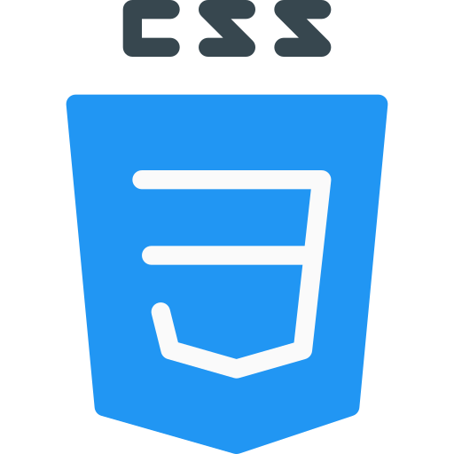

Habilidades
 Experiência no desenvolvimento de aplicações com Java.
Experiência no desenvolvimento de aplicações com Java.Capaz de estruturar páginas web com HTML.

Conhecimento básico em estilização de páginas com CSS. Conhecimento em edição e manipulação de imagens com Photoshop.
Conhecimento em edição e manipulação de imagens com Photoshop.
Familiaridade com criação de vetores e design gráfico no
Illustrator.
 Leitura técnica avançada e compreensão de termos da área.
Leitura técnica avançada e compreensão de termos da área. Noções de SQL e manipulação de dados em bancos
relacionais.
Noções de SQL e manipulação de dados em bancos
relacionais.